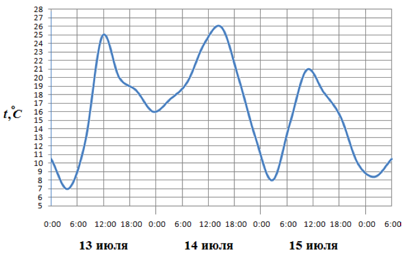
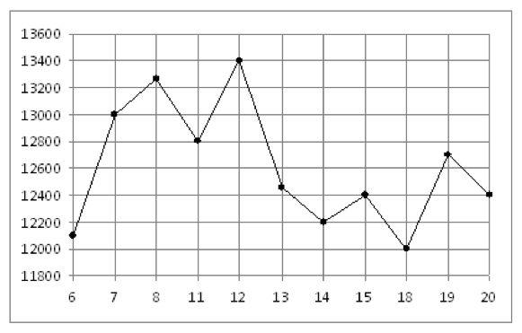

На рисунке показано изменение температуры воздуха на протяжении трех суток. По горизонтали указывается дата и время, по вертикали – значение температуры в градусах Цельсия. Определите по рисунку разность между наибольшей и наименьшей температурой воздуха 15 июля. Ответ дайте в градусах Цельсия.
13
На рисунке жирными точками показана цена никеля на момент закрытия биржевых торгов во все рабочие дни с 6 по 20 мая 2009 года. По горизонтали указываются числа месяца, по вертикали – цена тонны никеля в долларах США. Для наглядности жирные точки на рисунке соединены линией. Определите по рисунку наибольшую цену никеля на момент закрытия торгов в указанный период (в долларах США за тонну).
13400
На диаграмме показана среднемесячная температура воздуха в Екатеринбурге (Свердловске) за каждый месяц 1973 года. По горизонтали указываются месяцы, по вертикали – температура в градусах Цельсия. Определите по диаграмме разность между наибольшей и наименьшей среднемесячными температурами в 1973 году. Ответ дайте в градусах Цельсия.

38
На рисунке жирными точками показано суточное количество осадков, выпадавших в Казани с 3 по 15 февраля 1909 года. По горизонтали указываются числа месяца, по вертикали – количество осадков, выпавших в соответствующий день, в миллиметрах. Для наглядности жирные точки на рисунке соединены линией. Определите по рисунку, сколько дней из данного периода не выпадало осадков.
4
На диаграмме показано количество посетителей сайта РИА Новости во все дни с 10 по 29 ноября 2009 года. По горизонтали указываются дни месяца, по вертикали – количество посетителей сайта за данный день. Определите по диаграмме, во сколько раз наибольшее количество посетителей больше, чем наименьшее количество посетителей за день.
2